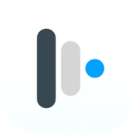
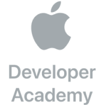

Mosyle
02/2022 - Presente
Apple Platforms Developer
Desenvolvimento de produtos de gerenciamento de dispositivos móveis (MDM) para macOS e dispositivos iOS. Trabalhando com uma equipe remota usando metodologias Ágeis, Swift, frameworks Apple (como UIKit) e frameworks internos.

Apple Developer Academy
01/2020 - 12/2021
Bolsista
Desenvolvimento de aplicativos para plataformas Apple (focado em iOS e macOS). Trabalhei com diferentes equipes (localmente e remotamente) usando Swift, frameworks Apple, metodologia Scrum e controle de versão Git.